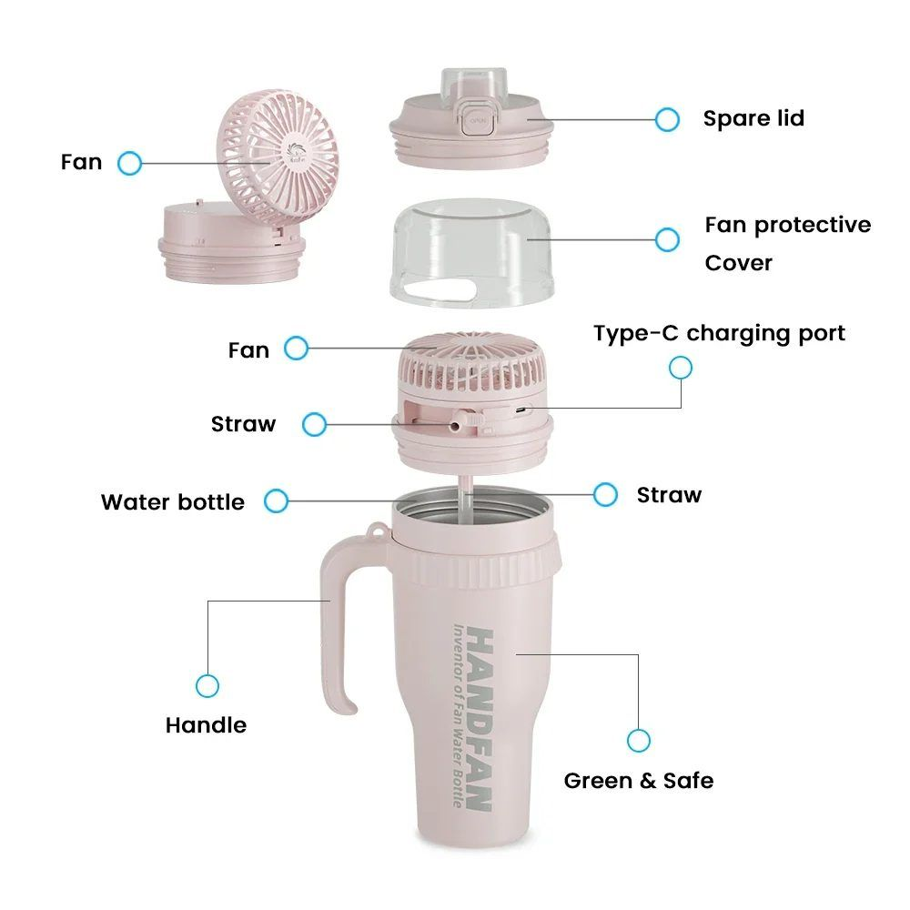
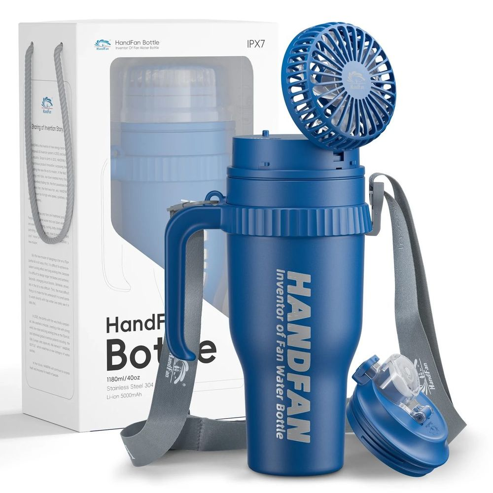
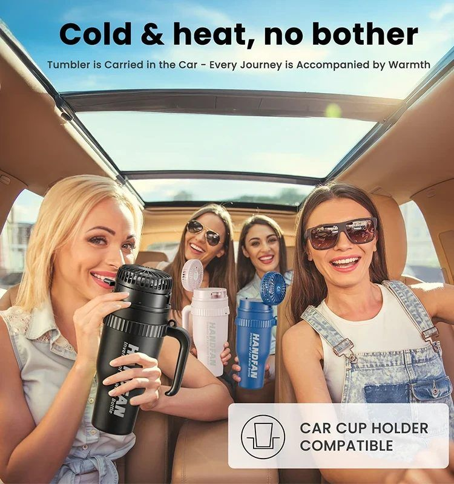

★★★★★
“El ventilador parece un juguete hasta que estás en la playa a 32 grados. Entonces es lo mejor del invento.”
Una botella térmica de 1,2 L con algo que no habíamos visto: un ventilador integrado en la tapa. Bebes por la pajita y, cuando aprieta el calor, giras el tapón y sopla.

Botella térmica de 1,2 litros (40 oz) con doble pared y acero inoxidable 304 por dentro y por fuera. El tapón lleva dentro el ventilador, que se carga por USB-C y se protege con su propia tapa.
Incluye pajita, asa de transporte y un tapón de repuesto, así que puedes dejar el ventilador en casa y usar la botella como cualquier termo.


Hielo por la mañana, agua fría por la tarde. O café caliente a media jornada. Son las cifras que declara el fabricante con la botella llena y cerrada.
La HandFan llegó en 2025 con galardones internacionales de diseño por la solución del ventilador integrado: un ventilador que no ocupa sitio porque vive donde antes estaba el tapón.


1,2 litros son muchos litros, pero la base entra en el hueco del coche. Con el asa y la correa se lleva cómoda y no rueda por el asiento.
Comprar la HandFanReseñas de ejemplo: sustitúyelas por las reales cuando tengas las primeras.
“El ventilador parece un juguete hasta que estás en la playa a 32 grados. Entonces es lo mejor del invento.”
“Lleno una vez al día y me olvido. El agua sigue fría a las ocho horas.”
“Es grande, eso sí. Yo la llevo en la mochila del trabajo y ahí va perfecta.”
No. El ventilador es para la cara y el aire de alrededor; la bebida se mantiene fría por el doble pared de acero.
Sí, la botella y la pajita se lavan a mano. El tapón con ventilador no debe sumergirse: se limpia con un paño húmedo.
Depende de la velocidad. Va cargando por USB-C y aguanta varias horas de uso seguido; para un día de playa hay de sobra.
El envío es gratis y el plazo se calcula al finalizar la compra. Tienes 30 días de garantía: escríbenos a contacto@gineska.com.